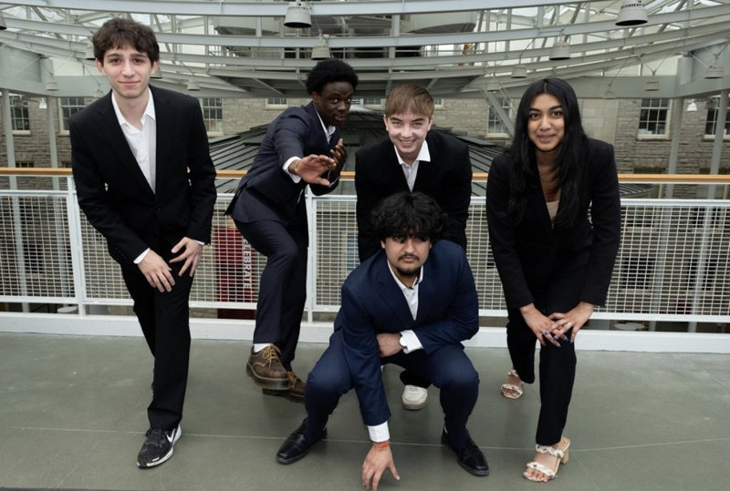

Work and Impact
Every job I've had taught me something about how businesses run, how people work together, and how important efficient systems are. I started in my family's food business, and since then I've worked in sales, research, operations, and data. Across all of it, I do the same thing, which is find where something is stuck, build a simple plan to fix it, and check that it worked, and that's what I want to keep doing in product and strategy.
- 8xrevenue growth at Pinch of Africa, $7K to $56K
- 70+event bookings, up from 17
- 294net-new accounts surfaced at OpenSesame
- 50+students mentored at a time
Professional Experience
Pinch of Africa
Pinch of Africa is my family's food business, and by the grace of God I helped grow it for more than five years. My mom built it while working overnight shifts, and in the summers I ran the grill and the cash register at our festival stands. When I started, our yearly revenue was about $7K, and over four years it grew 8x to $56K. Much of that growth came from small fixes, as I rebuilt our pricing, tightened how the kitchen ran, and made things better for customers from their first order to their next one.
Catering grew the most, from 17 events a year to more than 70, after I expanded our capacity and started tracking every lead, schedule, and follow-up in a CRM. I also built an Excel model for our costs and inventory so we could back up our decisions with consistent KPI reports. Then we went national, and I led the go-to-market plan and built the shipping and logistics end to end to get 5 products to customers in more than 10 states.
Cornell Consulting
Cornell Consulting is a student club, but we work with real companies, and I'm an analyst on two of those projects. On the first, our client was a Fortune 50 logistics company, and I did market research across the U.S., Canada, and the EU and wrote more than 20 pages on policy, legal, ethics, and strategy to help them think through expanding their platform.

I also helped shape the requirements and proof-of-concept ideas for customs clearance and predictive analytics, which was the product strategy side of the project, and I interviewed stakeholders and presented our transportation optimization and data platform recommendations to their executives at the end.
This semester, I'm working with a new restaurant in Ithaca on its social media and brand strategy, where I'm building a content calendar and brand voice guidelines, and I'm building the restaurant a new website, which puts the web development skills I'm learning in class to work on a real business. I also help recruit new interns for the club. The goal is to get more people in town to know about the restaurant and come through the door.
OpenSesame

From June to October, I was a remote revenue operations analyst intern at OpenSesame, on the Salesforce data behind the sales funnel. My first project was an account-matching model across more than 6,500 records that found 72 data fixes and 294 net-new accounts, which the team added to its pipeline. Then I combined more than 10,000 records from Salesforce and S&P Capital IQ into one segmentation framework, using AI tools to clean the data for e-commerce sales targeting.
I also analyzed more than 1,400 deals with 36 histograms and 72 lead-to-opportunity benchmarks, which showed us where leads were getting stuck. My last project was my favorite, because we had a backlog of 386,000 leads and I wrote the rules for when to convert, delete, reassign, and keep watching them.
Cornell Athletics
In Cornell's athletic department, I'm an operations assistant who runs apparel and uniform logistics for nine varsity programs, which means getting gear to more than 1,000 student-athletes on schedule. I also manage an 800-item equipment inventory and restock it three times a week, so daily practices and the fitness center never run out of what they need. On top of that, I handle locker, facility, and equipment requests from athletes and gym members, and my goal is that everyone gets the same quick, friendly service every time.
Project Access
Project Access is the mentoring initiative I run for first-generation and low-income students, and I'm growing it into a nonprofit. At any time, I'm working with more than 50 students through group sessions and with 20+ of them one-on-one. I built the curriculum and slides for our financial literacy and career exploration sessions, and I track feedback and attendance so each session is better than the last.
Mosakowski Institute
In the summer of 2024, I worked as a policy research intern at Clark University's Mosakowski Institute for Public Enterprise, right in Worcester, where I turned data from New England schools into governance recommendations for K-12 education policy reform. I also looked at how resources were spread across FGLI neighborhoods and found they were being misallocated. One finding stuck with me, that schools with poor websites had less published research about them and most of those schools couldn't afford to fix their sites. The gap kept feeding itself, which made the problem systemic, and that's the kind of problem I want to spend my career solving.
Masterman's
In the summer of 2023, I was a business intern at Masterman's in Auburn, Massachusetts, a family-owned safety and industrial supply company, where I did door-to-door sales and helped with outreach as part of the team. The best part was being mentored by business professionals, and I came away with a clearer picture of how a team handles outreach, follow-up, and selling, and I learned that you only get a yes if you're willing to knock.
Kohl's
I started at Kohl's in December 2023 as a seasonal sales associate in the shoe and apparel department and moved to part-time after the holiday season. I focused on turning people who were just browsing into repeat customers by starting conversations early, and one older customer even brought me cookies she baked in the air fryer I helped her buy.
I also lined up floor coverage, inventory, and visual merchandising with each promotion to help the store hit its KPI targets. In March 2024, I was named Employee of the Month for reliability and the revenue I brought in, and I'm honored to be the second youngest person in the store's history to earn it.
Education
Cornell University, Cornell Dyson, expected May 2029. I'm earning a B.S. in Applied Economics and Management with a Business Analytics concentration, and a B.S. in Information Science with a Data Science concentration.
- Managerial Economics
- Game Theory
- Cost Analysis
- Statistics and Data Science
- Computing in Python
- Web Design and Programming
- Marketing
- Management Communication
- Finance
Skills
Product and Strategy
- Product Strategy
- Go-to-Market Strategy
- Business Strategy
- Strategic Planning
- Business Analysis
- Market Research
- Competitive Analysis
- KPI Reporting
- Process Improvement
- Project Management
- Executive Presentation
Technical
- Excel Modeling
- Salesforce (CRM)
- Python (Beginner)
- HTML/CSS
- JavaScript (Beginner)
- S&P Capital IQ
- Data Analysis
- Data Visualization
- Data Cleaning
- Google Sheets
- MS Office
- Google Workspace
- Generative AI
- Financial Modeling
People
- Mentoring
- Coaching
- Advising
- Storytelling
- Public Speaking
- Written Communication
- Workshop Facilitation
- Team Leadership
- Event Planning
- Customer Service
- Community Building
- Cross-Cultural Communication
- Nonprofit Development
- Curriculum Design
Learning Next
- SQL
- Tableau
Licenses and Certifications
Outside of work and class, I like picking up new skills on my own, and here are the licenses and certifications I have so far.
- Bloomberg Market Concepts (Bloomberg for Education)
- Lean Six Sigma White Belt (Process Management International)
- IBM Data Fundamentals (IBM SkillsBuild)
- Bloomberg Finance Fundamentals (Bloomberg for Education)
- Oliver Wyman First-Year Immersion Program
- Ethical AI: Building Trust and Transparency in the Workplace (OpenSesame)
- CyberEssentials: Principles of Cybersecurity (OpenSesame)
- Canva Essentials (Canva Design School)
Beyond the Work
Work is only part of the picture, because outside of jobs and class I mentor students, play drums, make films, and cook, and those things have taught me as much as any role on this page.
See Community and Creativity